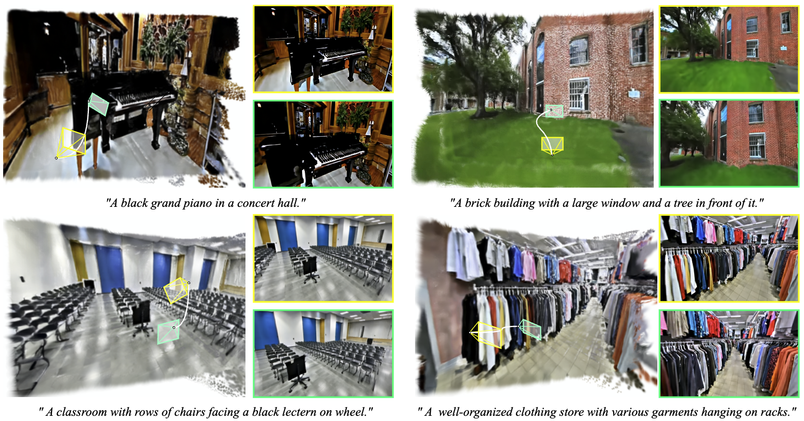
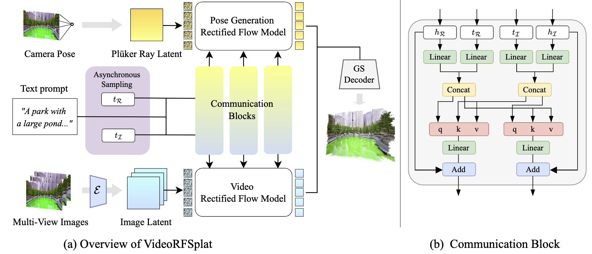
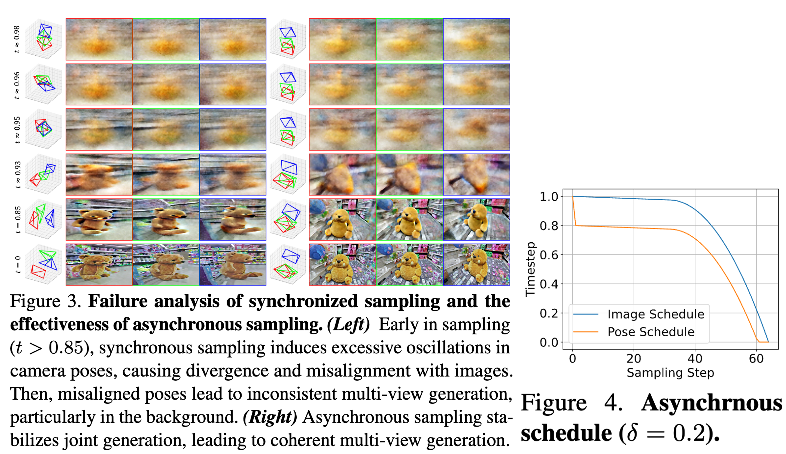
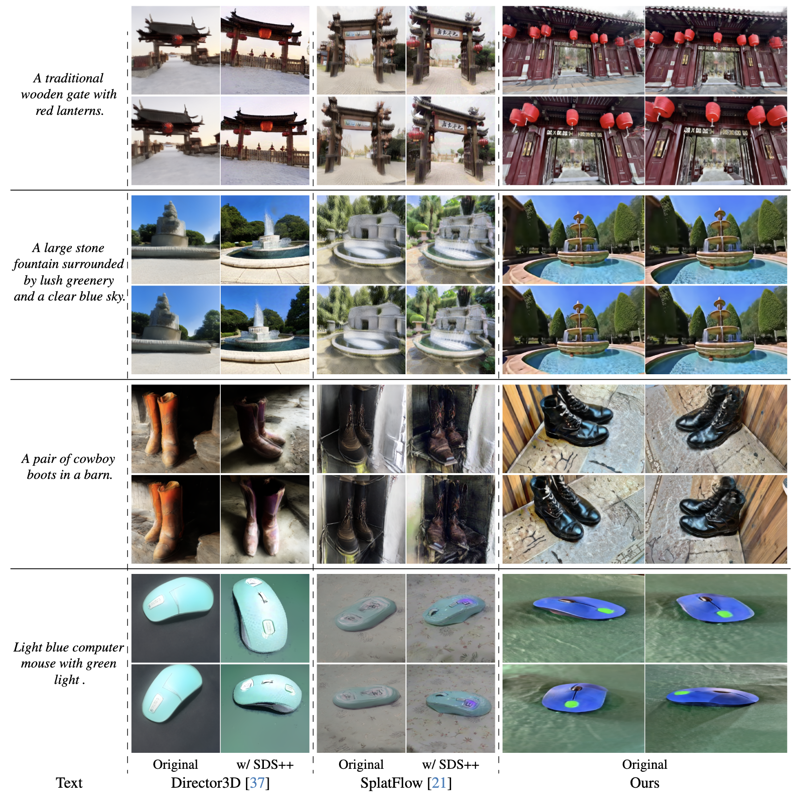

TL;DR: VideoRFSplat is a direct 3DGS generation model for real-world scenes from given text prompts, which leverages a video generation model's prior.

These are the generated 3DGS from VideoRFSplat. Prompts are generated from GPT-4o.
A gothic cathedral with towering stained-glass windows, flickering candlelight illuminating ancient stone walls, and an ominous thunderstorm outside.
A futuristic cyberpunk city at night, illuminated by neon signs, holographic billboards, towering skyscrapers.
A colossal, ancient tree with sprawling roots that intertwine with the ruins of an old temple, glowing runes carved into its bark.
A massive alien desert with shifting purple sands, floating rock formations, and a sky dominated by twin suns casting eerie shadows.
A medieval European village with cobblestone streets, timber-framed houses, and a grand stone castle in the distance, surrounded by lush green fields
A mystical underwater kingdom with coral castles, bioluminescent sea creatures, and shimmering schools of fish swimming through ancient ruins.
A serene desert landscape with rolling sand dunes, scattered cacti, and a warm golden sunset casting long shadows across the terrain.
A high-tech spaceship cockpit filled with holographic control panels, sleek metallic surfaces, and a panoramic view of distant galaxies.
A tranquil Japanese temple garden with cherry blossoms in full bloom, stone lanterns lining a peaceful koi pond, and the distant chime of wind bells.
A turbulent ocean storm with crashing waves, lightning illuminating the dark clouds.
A wooden treasure chest with iron reinforcements.
Snowy mountain peaks towering over a dense evergreen forest, with a frozen lake reflecting the golden hues of the setting sun.
We propose VideoRFSplat, a direct text-to-3D model leveraging a video generation model to generate realistic 3D Gaussian Splatting (3DGS) for unbounded real-world scenes. To generate diverse camera poses and unbounded spatial extent of real-world scenes, while ensuring generalization to arbitrary text prompts, previous methods fine-tune 2D generative models to jointly model camera poses and multi-view images. However, these methods suffer from instability when extending 2D generative models to joint modeling due to the modality gap, which necessitates additional models to stabilize training and inference. In this work, we propose an architecture and a sampling strategy to jointly model multi-view images and camera poses when fine-tuning a video generation model. Our core idea is a dual-stream architecture that attaches a dedicated pose generation model alongside a pre-trained video generation model via communication blocks, generating multi-view images and camera poses through separate streams. This design reduces interference between the pose and image modalities. Additionally, we propose an asynchronous sampling strategy that denoises camera poses faster than multi-view images, allowing rapidly denoised poses to condition multi-view generation, reducing mutual ambiguity and enhancing cross-modal consistency. Trained on multiple large-scale real-world datasets (RealEstate10K, MVImgNet, DL3DV-10K, ACID), VideoRFSplat outperforms existing text-to-3D direct generation methods that heavily depend on post-hoc refinement via score distillation sampling, achieving superior results without such refinement.
In this work, we improve the joint distribution modeling of multi-view images and camera poses for text-to-3D generation by leveraging video generation models. Previous approaches to direct 3DGS generation for real-world scenes jointly generate multi-view images and diverse camera poses using 2D generative models, eliminating the need for user-specified viewpoints. However, we found that parameter-sharing schemes between these modalities, such as channel concatenation, degrade text-prompt coherence and generation quality. To address this, we propose a dual-stream architecture that integrates a dedicated pose generation model alongside a pre-trained video generation model via communication blocks (see below figure). By generating multi-view images and camera poses in separate streams, our approach minimizes interference between modalities, improving both consistency and fidelity. Then, gaussian splatting decoder based on feedforward 3DGS methods decodes 3DGS from generated multi-view image latents and camera poses.
Also, previous works that jointly generate multi-view images and camera poses often suffer from early-stage "mutual ambiguity," where each modality (pose vs. image) is noisy and can push the generation in conflicting directions. As illustrated in Fig. 3, this leads to instability such as misaligned poses or rapid oscillations in viewpoint. To address this, we perform asynchronous sampling, in which we decompose the timesteps for image latents and camera rays. Concretely, we denoise the camera pose more quickly (i.e., use a shorter schedule for pose updates) so that a stable viewpoint is established early on, reducing the risk of inconsistent updates to the scene (see Fig. 4 for how this schedule is arranged). In practice, we define two learned modules for image and pose, respectively, with a single text prompt. We train them via a joint denoising objective to preserve consistency between the evolving image and the evolving pose. Because the camera pose is denoised more aggressively, it stabilizes sooner, guiding the image generation toward more coherent multi-view samples. We further enhance this process using a strategy similar to classifier-free guidance (CFG) for the pose when it is nearly resolved, treating it as an approximately unconditional prior. This stabilizes the viewpoint while the images continue to refine.
Our main result is that VideoRFSplat outperforms existing text-to-3D direct generation methods that heavily depend on post-hoc refinement via score distillation sampling, achieving superior results without such refinement. We also validate the effectiveness of our proposed dual-stream architecture and asynchronous sampling strategy in improving the joint distribution modeling of multi-view images and camera poses for text-to-3D generation (Please see our paper!).
